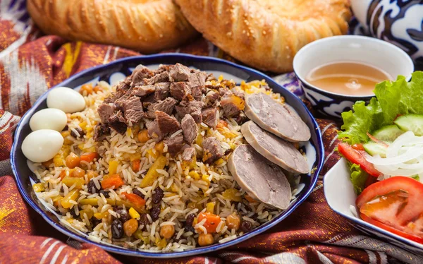
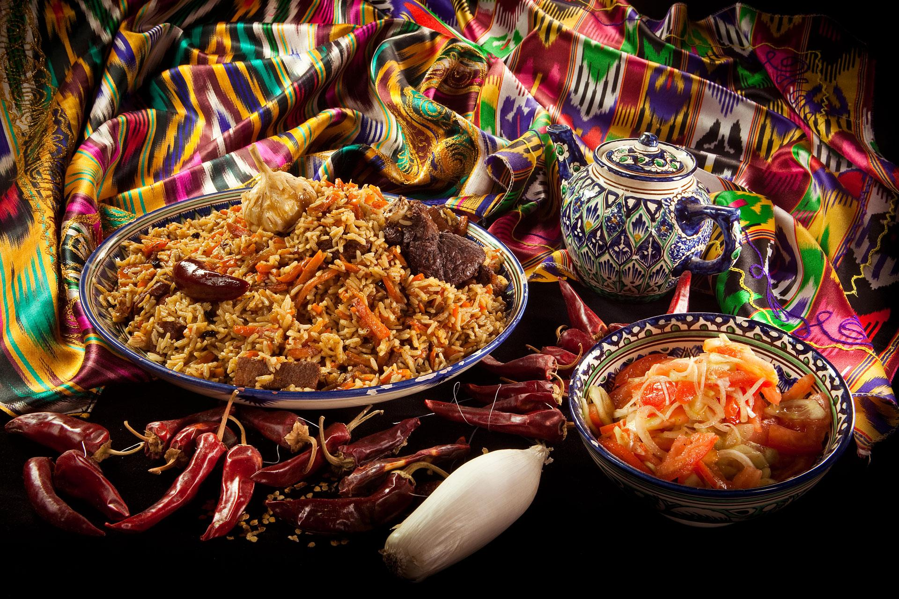
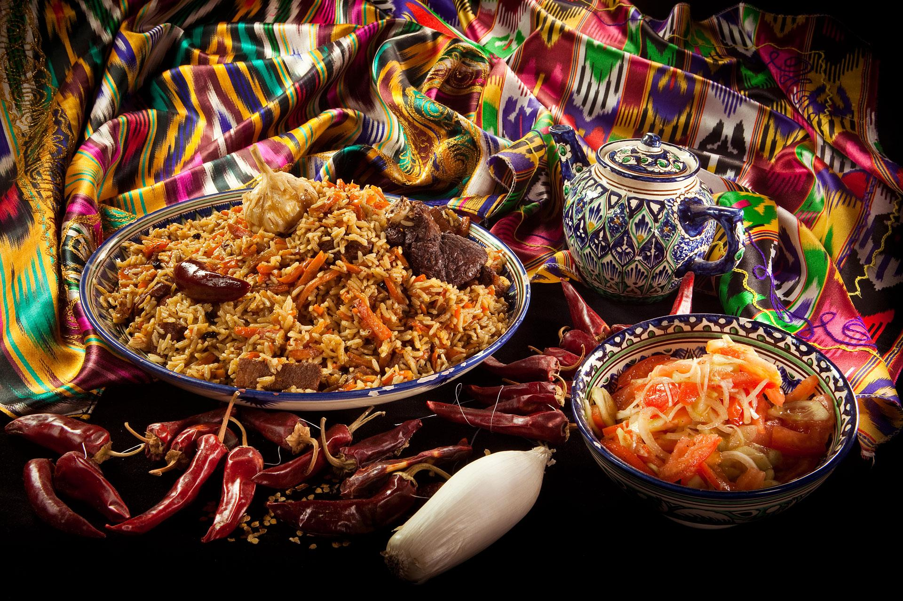

Pilaf recipe

 

Get back to homepage!
About Pilaf
Pilaf or, as it is called in Uzbekistan - palov, is a traditional dish that every resident of Uzbekistan should be able to prepare.
Pilaf follows the migration patterns of ancient Persians through the Middle East, Asia and Europe. From there, colonization brought pilaf to the Americas.
Ingredients
-
Aromatics - garlic and onion, true staples in our cooking! Fresh is key, and we even add a little extra flavor
with some powdered but you really need at least some fresh for this recipe as it's the base of a great pilaf.
-
Rice - For the rice, Long Grain White, Basmati or Jasmine all work great. Be sure you rinse it!
-
Orzo - Not found in all rice pilaf dishes, but the added taste and texture (and look) of the orzo pasta is what
really brings me back to the boxed version from my childhood.
-
Cooking liquid - We prefer a nice homemade Stock. Use Vegetable to keep it vegetarian or chicken, whatever you
have on hand, or use it and a mixture of water.
-
Oil or olive oil - Not only used for the fat to cook your garlic and onion, but it's also key to coat the rice!
See the how-to below for why it's so important. Butter would of course also work.
-
Salt and spices - Garlic and Onion Powder, Paprika, and Ground Coriander are my
favorites but you could also use curry or cumin.
-
Fresh parsley - for a pop of herbal freshness.
Process of making Pilaf
Here are some instructions to make Pilaf at home easily!
-
Sauté your aromatics in 1/2 the oil and then add the orzo and coat it with oil and toast.
-
Add the other 1/2 of the oil and then add your rinsed rice and stir to coat all of the rice.
This step is very important to not only building flavor but toasting the grains and coating them
with oil will help prevent it from clumping.
-
Add your spices, give a mix, add the stock, cover, then sit back and relax and finish the rest of your dinner in the next
15 minutes. Be sure to check the package of the rice you use for cooking time, most will say 15-20 minutes.
-
Once you have that beautiful perfectly cooked rice (thanks to you not lifting the lid or stirring it), let that rice rest.
Take it off the heat and give it a couple of minutes, covered, to collect a little more of that steam into the rice.
This is what will help it become nice and fluffy.
-
Once it's rested for a few minutes, add your fresh parsley, give it a fluff,
and you have beautiful, fluffy, perfectly cooked Easy Homemade Rice Pilaf!
Top 2 Tips for Cooking Rice
-
Don't lift the lid. Resist! Hold back the urge to lift that lid and take a peak.
The minute you lift the lid of the pot and that steam escapes, you've messed with the perfect balance of liquid to rice!
Unless you smell something badly burning (which would usually mean the liquid to rice ratio was off from the start),
leave that lid on!
-
Never stir the rice. By stirring it, you're going to activate the starch in the rice and that's
when you end up with mushy rice. Save that rice stirring only for your risotto.
All these informations above are taken from
this website!